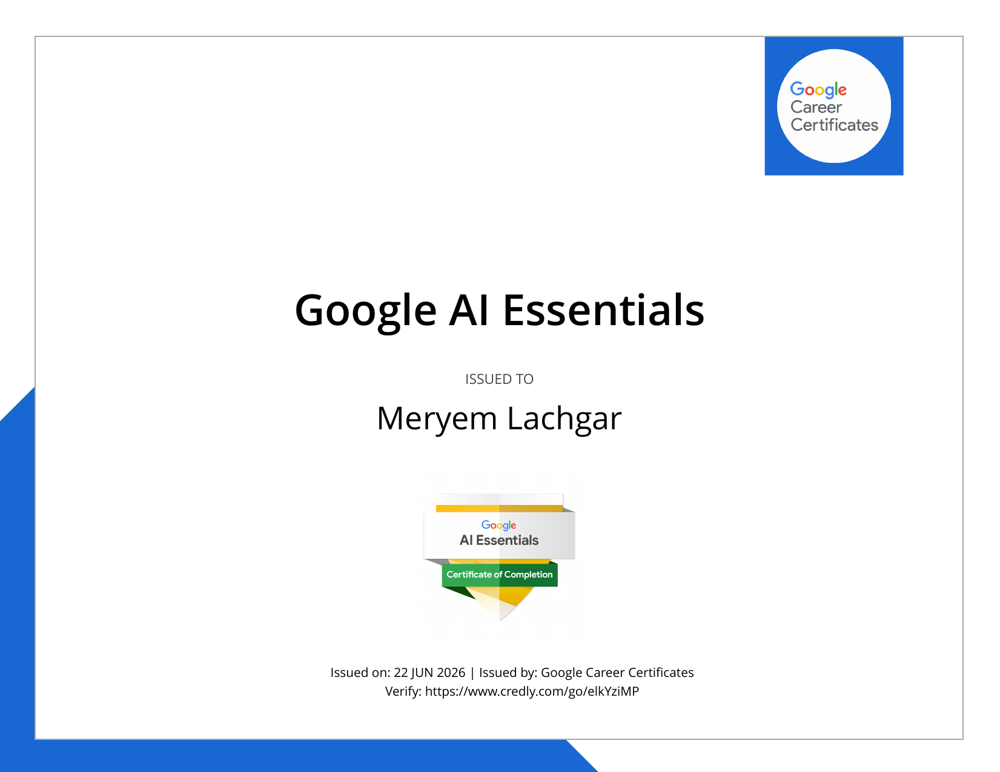

Analytics Engineer · Data Analyst · Consultant BI
Je transforme des données complexes en décisions métier actionnables.
Expérience en environnements exigeants — RATP et Crédit Agricole —
de la conception ETL au déploiement Power BI, en passant par la gouvernance de la donnée.
Je suis Data Analyst titulaire d'un Master 2 MIAGE spécialité Informatique Décisionnelle, réalisé en alternance à l'Université Paris-Saclay. Mon parcours m'a permis de maîtriser l'intégralité de la chaîne décisionnelle : de l'ingestion ETL à la restitution en tableaux de bord, en passant par la modélisation dimensionnelle, la data quality et la gouvernance.
À la RATP (CSP Logistique — Dir. Stratégie, Finance & Performance Durable), j'ai industrialisé une solution BI complète sous Talend + Power BI pour piloter ~100 M€ de stocks. J'ai conçu plusieurs tableaux de bord opérationnels et stratégiques, optimisé des pipelines ETL, formalisé des règles de gestion et animé des comités de pilotage avec la direction financière. Mon mémoire de M2 porte sur la gouvernance de la donnée au service de la performance de la supply chain.
Auparavant, en alternance au Crédit Agricole Consumer Finance, j'ai développé de A à Z une application QlikView de contrôle automatisé des flux SI/datamart, avec des scripts SAS batch et une gestion complète du cycle dev → recette → production mensuelle.
Ce qui me motive : transformer des données brutes en informations actionnables qui permettent de prendre de meilleures décisions, plus vite, et en toute confiance.
Compétences alignées avec les postes Data Analyst, Consultant BI et Analytics Engineer en 2026.
Alternance en grandes entreprises — transport public et secteur bancaire (financement à la consommation).
Certifications obtenues en complément du Master MIAGE, pour suivre les évolutions de la stack data (Analytics Engineering, IA).

Cliquez sur un projet pour accéder à la fiche complète — même format pour chaque réalisation.
Aperçu interactif des tableaux de bord et projets — données anonymisées et open data.
Requêtes, pipelines et scripts issus de missions réelles ou académiques — SQL avancé, Python, DAX, SAS, QlikView, R, VBA.
🔒 Extraits illustratifs reconstitués à partir de missions réelles — noms de tables, schémas et données entièrement fictifs. Le code propriétaire reste confidentiel conformément aux accords en vigueur.
-- ══════════════════════════════════════════════════════════════════════
-- KPI STOCKS — Taux de couverture & valorisation par famille d'article
-- Périmètre : dépôts RATP actifs, mois en cours vs N-1
-- ══════════════════════════════════════════════════════════════════════
WITH
-- 1. Stock physique au dernier inventaire du mois
cte_stock_mensuel AS (
SELECT
s.article_id,
s.depot_code,
s.qte_stock_physique,
s.qte_stock_valorise * a.prix_moyen_pondere AS valeur_stock_eur,
s.mois_stock
FROM stock_inventaire s
JOIN article a ON a.article_id = s.article_id
WHERE s.mois_stock = TRUNC(SYSDATE, 'MM')
AND s.depot_code IN (
SELECT depot_code FROM depot WHERE statut = 'ACTIF'
)
),
-- 2. Consommation moyenne glissante 3 mois (anti-saisonnalité)
cte_conso_moy AS (
SELECT
article_id,
ROUND(AVG(qte_consommee), 2) AS conso_moy_3m
FROM mouvement_stock
WHERE type_mouvement = 'SORTIE'
AND date_mouvement >= ADD_MONTHS(TRUNC(SYSDATE, 'MM'), -3)
GROUP BY article_id
),
-- 3. Calcul KPI avec alertes multi-niveaux
cte_kpi AS (
SELECT
f.famille_code,
f.famille_libelle,
COUNT(DISTINCT sm.article_id) AS nb_articles,
SUM(sm.qte_stock_physique) AS stock_physique,
ROUND(SUM(sm.valeur_stock_eur) / 1e6, 3) AS valeur_M_eur,
ROUND(
SUM(sm.qte_stock_physique)
/ NULLIF(SUM(c.conso_moy_3m), 0),
1) AS taux_couverture_mois,
-- Part de stock dormant (>12 mois sans mouvement)
SUM(CASE WHEN m.derniere_sortie < ADD_MONTHS(SYSDATE,-12)
THEN sm.valeur_stock_eur ELSE 0 END) AS valeur_stock_dormant
FROM cte_stock_mensuel sm
JOIN article a ON a.article_id = sm.article_id
JOIN famille f ON f.famille_id = a.famille_id
LEFT JOIN cte_conso_moy c ON c.article_id = sm.article_id
LEFT JOIN (
SELECT article_id, MAX(date_mouvement) AS derniere_sortie
FROM mouvement_stock WHERE type_mouvement = 'SORTIE'
GROUP BY article_id
) m ON m.article_id = sm.article_id
GROUP BY f.famille_code, f.famille_libelle
)
-- 4. Résultat final avec statut KPI et comparaison N-1
SELECT
k.famille_code,
k.famille_libelle,
k.nb_articles,
k.stock_physique,
k.valeur_M_eur,
k.taux_couverture_mois,
ROUND(k.valeur_stock_dormant / NULLIF(k.valeur_M_eur * 1e6, 0) * 100, 1)
AS pct_stock_dormant,
CASE
WHEN k.taux_couverture_mois IS NULL THEN 'N/D'
WHEN k.taux_couverture_mois < 1 THEN '🔴 RUPTURE'
WHEN k.taux_couverture_mois < 3 THEN '🟠 ALERTE'
WHEN k.taux_couverture_mois > 18 THEN '🟡 SURSTOCK'
ELSE '🟢 OK'
END AS statut_kpi,
-- Delta vs même mois N-1
ROUND(k.taux_couverture_mois - k_n1.taux_couverture_mois, 1) AS delta_vs_n1
FROM cte_kpi k
LEFT JOIN cte_kpi_n1 k_n1 -- vue pré-calculée N-1
ON k_n1.famille_code = k.famille_code
ORDER BY k.taux_couverture_mois ASC NULLS LAST;
Ce que fait cette requête : calcul complet des KPI stocks logistique avec 4 CTEs imbriquées — stock physique, consommation glissante 3 mois, taux de couverture par famille d'article, détection de stock dormant et comparaison N-1. Optimisée pour Oracle (NULLIF, ADD_MONTHS, TRUNC).
import pandas as pd
import numpy as np
from sklearn.ensemble import IsolationForest
from sklearn.preprocessing import StandardScaler
import warnings
warnings.filterwarnings('ignore')
def pipeline_kpi_stocks(filepath: str, seuil_contamination: float = 0.02) -> dict:
"""
Pipeline complet : ingestion CSV Oracle → nettoyage → KPI → détection anomalies.
Contexte : reporting mensuel stocks RATP (Talend export → Python → Power BI).
Args:
filepath: Chemin export CSV Oracle (séparateur ';', encodage utf-8-sig)
seuil_contamination: Proportion d'anomalies attendue (Isolation Forest)
Returns:
dict avec DataFrames kpi, anomalies, synthese
"""
# ── 1. Ingestion & typage ────────────────────────────────────────────────
df = pd.read_csv(
filepath, sep=';', encoding='utf-8-sig',
parse_dates=['date_mouvement', 'date_inventaire'],
dayfirst=True,
dtype={'article_id': str, 'depot_code': str, 'famille_code': str}
)
# ── 2. Nettoyage & validation ────────────────────────────────────────────
n_brut = len(df)
df = (
df
.dropna(subset=['article_id', 'qte_stock', 'valeur_stock'])
.query('qte_stock >= 0 and valeur_stock >= 0')
.drop_duplicates(subset=['article_id', 'depot_code', 'date_inventaire'])
)
print(f"[NETTOYAGE] {n_brut} → {len(df)} lignes ({n_brut - len(df)} supprimées)")
# ── 3. Feature engineering ───────────────────────────────────────────────
df['mois'] = df['date_inventaire'].dt.to_period('M')
# Consommation glissante 3 mois par article
df = df.sort_values(['article_id', 'date_mouvement'])
df['conso_moy_3m'] = (
df.groupby('article_id')['qte_conso']
.transform(lambda x: x.rolling(3, min_periods=1).mean())
)
# Taux de couverture (en mois)
df['taux_couverture'] = np.where(
df['conso_moy_3m'] > 0,
df['qte_stock'] / df['conso_moy_3m'],
np.nan
)
# Statut KPI métier
bins = [-np.inf, 0, 1, 3, 18, np.inf]
labels = ['RUPTURE', 'CRITIQUE', 'ALERTE', 'OK', 'SURSTOCK']
df['statut_kpi'] = pd.cut(df['taux_couverture'], bins=bins, labels=labels)
# ── 4. Agrégation KPI par famille × mois ────────────────────────────────
kpi = (
df.groupby(['famille_code', 'famille_libelle', 'mois'])
.agg(
stock_physique = ('qte_stock', 'sum'),
valeur_eur = ('valeur_stock', 'sum'),
taux_couverture = ('taux_couverture', 'mean'),
nb_articles = ('article_id', 'nunique'),
nb_alertes = ('statut_kpi',
lambda x: (x.isin(['CRITIQUE','ALERTE','RUPTURE'])).sum())
)
.reset_index()
.assign(valeur_M_eur = lambda x: (x['valeur_eur'] / 1e6).round(3))
)
# ── 5. Détection anomalies (Isolation Forest) ────────────────────────────
features = ['qte_stock', 'valeur_stock', 'taux_couverture', 'conso_moy_3m']
df_feat = df[features].fillna(df[features].median())
scaler = StandardScaler()
X_scaled = scaler.fit_transform(df_feat)
iso = IsolationForest(contamination=seuil_contamination, random_state=42, n_jobs=-1)
df['anomalie'] = iso.fit_predict(X_scaled) # -1 = anomalie, 1 = normal
df['score_anomalie'] = iso.score_samples(X_scaled) # plus négatif = plus suspect
anomalies = (
df[df['anomalie'] == -1]
[['article_id', 'depot_code', 'famille_code',
'date_inventaire', 'qte_stock', 'valeur_stock',
'taux_couverture', 'score_anomalie']]
.sort_values('score_anomalie')
)
# ── 6. Synthèse executive ────────────────────────────────────────────────
synthese = {
'total_articles' : df['article_id'].nunique(),
'valeur_totale_M' : round(df['valeur_stock'].sum() / 1e6, 2),
'nb_ruptures' : (df['statut_kpi'] == 'RUPTURE').sum(),
'nb_alertes' : (df['statut_kpi'] == 'ALERTE').sum(),
'nb_surstocks' : (df['statut_kpi'] == 'SURSTOCK').sum(),
'nb_anomalies_ml' : len(anomalies),
'taux_couv_moyen' : round(df['taux_couverture'].mean(), 1),
}
return {'kpi': kpi, 'anomalies': anomalies, 'synthese': synthese}
# ── Exemple d'appel ──────────────────────────────────────────────────────────
if __name__ == '__main__':
resultats = pipeline_kpi_stocks('export_oracle_juin2026.csv')
print(pd.DataFrame([resultats['synthese']]).T.to_string(header=False))
resultats['kpi'].to_parquet('kpi_stocks_juin2026.parquet', index=False)
Ce que fait ce script : pipeline complet de traitement data — ingestion CSV, nettoyage, feature engineering (conso glissante, taux de couverture), agrégation KPI, et détection automatique d'anomalies via Isolation Forest (sklearn). Sortie Parquet optimisée pour Power BI DirectQuery.
-- ═══ Taux de service commandes (avec filtre contexte date dynamique) ═══
Taux de Service % =
VAR _total =
CALCULATE(
COUNTROWS( FactCommandes ),
FactCommandes[statut] IN { "LIVRE", "LIVRE_PARTIEL", "HORS_DELAI" }
)
VAR _dans_delai =
CALCULATE(
COUNTROWS( FactCommandes ),
FactCommandes[statut] = "LIVRE",
FactCommandes[delai_reel_j] <= FactCommandes[delai_cible_j]
)
RETURN
DIVIDE( _dans_delai, _total, BLANK() )
-- ═══ Variation stock vs période précédente (time intelligence) ═══
Variation Stock M vs M-1 =
VAR _stock_actuel =
[Stock Physique Total]
VAR _stock_precedent =
CALCULATE(
[Stock Physique Total],
DATEADD( DimDate[Date], -1, MONTH )
)
RETURN
DIVIDE( _stock_actuel - _stock_precedent, _stock_precedent, BLANK() )
-- ═══ Familles en alerte stock (mesure dynamique pour titre visuel) ═══
Familles en Alerte =
VAR _seuil = SELECTEDVALUE( ParamSeuil[Valeur], 3 ) -- paramètre utilisateur
RETURN
CALCULATE(
DISTINCTCOUNT( DimFamille[famille_code] ),
FILTER(
VALUES( DimFamille[famille_code] ),
[Taux Couverture Moyen] < _seuil
)
)
-- ═══ Valeur stock dormant >12 mois (DAX + table auxiliaire) ═══
Valeur Stock Dormant EUR =
VAR _date_seuil = EDATE( TODAY(), -12 )
RETURN
SUMX(
FILTER(
FactStock,
RELATED( DimMouvements[derniere_sortie] ) < _date_seuil
|| ISBLANK( RELATED( DimMouvements[derniere_sortie] ) )
),
FactStock[valeur_stock_eur]
)
-- ═══ Titre KPI dynamique pour carte visuel ═══
Titre Taux Service =
VAR _val = [Taux de Service %]
VAR _icone = IF( _val >= 0.95, "✅", IF( _val >= 0.85, "⚠️", "🔴" ) )
RETURN
_icone & " Taux de service : " & FORMAT( _val, "0.0%" )
Ce que font ces mesures : 5 mesures DAX de production — taux de service avec contexte de filtre, time intelligence M vs M-1, comptage conditionnel multi-contexte, SUMX avec FILTER sur table liée, et titre visuel dynamique avec icônes d'alerte. Utilisées dans le dashboard Power BI RATP.
/* ══════════════════════════════════════════════════════════════════════
MACRO SAS — Rapprochement KPI quotidien J/J-1
Contexte : CACF — supervision indicateurs Datamart commerce
Usage : %rapprochement_kpi(dt_cible=10JUN2026, seuil=0.05)
══════════════════════════════════════════════════════════════════════ */
%macro rapprochement_kpi(dt_cible=, seuil=0.05, envoi_mail=Y);
/* 1. Calcul date veille (gestion weekends & jours fériés) */
%let dt_num = %sysfunc(inputn(&dt_cible, date9.));
%let dt_veille = %sysfunc(putn(%eval(&dt_num - 1), date9.));
%put NOTE: [RAPPROCHEMENT] J=&dt_cible / J-1=&dt_veille / Seuil=&seuil;
/* 2. Extraction et rapprochement depuis Datamart Oracle */
proc sql noprint;
create table work.kpi_compare as
select
a.indicateur_code,
a.libelle_kpi,
a.perimetre,
a.valeur_j as val_j format=comma16.2,
b.valeur_j as val_j1 format=comma16.2,
case
when b.valeur_j = 0 then .
else (a.valeur_j - b.valeur_j) / abs(b.valeur_j)
end as ecart_pct format=percent8.2,
case
when b.valeur_j = 0 then 'N/D'
when abs(calculated ecart_pct) > &seuil then 'ALERTE'
when a.valeur_j = . then 'MANQUANT'
else 'OK'
end as statut length=10,
a.valeur_j - b.valeur_j as delta_absolu format=comma16.2
from lib_dm.kpi_quotidien(where=(date_stat = "&dt_cible"d)) a
left join
lib_dm.kpi_quotidien(where=(date_stat = "&dt_veille"d)) b
on a.indicateur_code = b.indicateur_code
order by statut desc, abs(calculated ecart_pct) desc;
/* Comptage alertes pour routing */
select count(*) into :nb_alertes trimmed
from work.kpi_compare
where statut = 'ALERTE';
quit;
%put NOTE: [ALERTES] &nb_alertes indicateur(s) hors seuil détecté(s).;
/* 3. Rapport Excel avec mise en forme conditionnelle */
ods excel file="&chemin_out./rapport_kpi_&dt_cible..xlsx"
options(sheet_name="KPI &dt_cible"
frozen_headers='yes'
autofilter='all');
proc report data=work.kpi_compare nowd;
column indicateur_code libelle_kpi perimetre
val_j val_j1 delta_absolu ecart_pct statut;
define statut / display style(column)=
[background=
cass(statut,
'ALERTE', 'lightcoral',
'MANQUANT', 'lightyellow',
, 'lightgreen')];
run;
ods excel close;
/* 4. Envoi e-mail si alertes et option activée */
%if &envoi_mail = Y and &nb_alertes > 0 %then %do;
filename mailout email
to = ("equipe-data@cacf.fr")
subject = "[ALERTE] &nb_alertes KPI hors seuil — &dt_cible"
attach = ("&chemin_out./rapport_kpi_&dt_cible..xlsx");
data _null_;
file mailout;
put "Bonjour,";
put "&nb_alertes indicateur(s) présentent un écart > &seuil % vs J-1.";
put "Rapport joint. Veuillez vérifier avant 9h.";
run;
filename mailout clear;
%end;
%put NOTE: [FIN] Rapprochement &dt_cible terminé.;
%mend rapprochement_kpi;
/* Appel quotidien planifié (EG Scheduler) */
%rapprochement_kpi(dt_cible=%sysfunc(today(), date9.), seuil=0.05, envoi_mail=Y);
Ce que fait cette macro : rapprochement automatisé des KPI quotidiens J vs J-1 en SAS EG — extraction Datamart Oracle, calcul d'écarts avec gestion des divisions par zéro, rapport Excel avec mise en forme conditionnelle, envoi d'alerte e-mail automatique si dépassement de seuil. Planifié quotidiennement.
// ══════════════════════════════════════════════════════════════════════
// SCRIPT QLIKVIEW — Application supervision SI / Datamart (CACF)
// Contrôle des batchs planifiés, écarts J/J-1, alertes automatiques
// ══════════════════════════════════════════════════════════════════════
SET ThousandSep='.';
SET DecimalSep=',';
SET DateFormat='DD/MM/YYYY';
SET TimestampFormat='DD/MM/YYYY hh:mm:ss';
LET vDateJ = Date(Today()-1, 'DD/MM/YYYY'); // Données J-1 (batch nuit)
LET vDateJ1 = Date(Today()-2, 'DD/MM/YYYY'); // Référence J-2
LET vSeuil = 5; // Seuil alerte écart en %
// ── TABLE 1 : Log batchs planifiés ────────────────────────────────────
BATCH_MONITORING:
LOAD
BATCH_ID,
BATCH_NAME,
DATE(BATCH_DATE, 'DD/MM/YYYY') AS DATE_EXEC,
TIME(BATCH_START_TS, 'hh:mm:ss') AS HEURE_DEBUT,
TIME(BATCH_END_TS, 'hh:mm:ss') AS HEURE_FIN,
BATCH_DURATION_MIN,
BATCH_STATUS, // OK | KO | TIMEOUT | EN_COURS
NB_LIGNES_SOURCE,
NB_LIGNES_CIBLE,
NB_REJETS,
ROUND(NB_REJETS / NullAsValue(NB_LIGNES_SOURCE, 1) * 100, 2)
AS PCT_REJETS,
IF(BATCH_STATUS = 'KO' OR PCT_REJETS > 1, 'ALERTE', 'OK')
AS STATUT_ALERTE
FROM [lib://MonitoringDB/batch_log_daily.qvd] (qvd)
WHERE DATE_EXEC = '$(vDateJ)';
// ── TABLE 2 : Écarts volumétrie J/J-1 par table Datamart ──────────────
ECARTS_DATAMART:
LOAD
TABLE_NAME,
SCHEMA_NAME,
NB_LIGNES_J,
NB_LIGNES_J1,
NB_LIGNES_J - NB_LIGNES_J1 AS DELTA_LIGNES,
ROUND(
(NB_LIGNES_J - NB_LIGNES_J1)
/ NullAsValue(NB_LIGNES_J1, 1) * 100, 2
) AS PCT_DELTA,
IF(
ABS(
(NB_LIGNES_J - NB_LIGNES_J1)
/ NullAsValue(NB_LIGNES_J1, 1) * 100
) > $(vSeuil),
'ALERTE', 'OK'
) AS STATUT_ECART,
DATE(DATE_CONTROLE, 'DD/MM/YYYY') AS DATE_CONTROLE
FROM [lib://MonitoringDB/dm_daily_row_counts.qvd] (qvd)
WHERE DATE_CONTROLE >= '$(vDateJ1)';
// ── TABLE 3 : Référentiel batchs attendus (pour détection absences) ───
LEFT JOIN (BATCH_MONITORING)
LOAD
BATCH_ID,
BATCH_NAME,
PERIODICITE, // QUOTIDIEN | HEBDO | MENSUEL
CRITICITE // CRITIQUE | STANDARD | FAIBLE
FROM [lib://Referentiel/ref_batch_planning.xlsx]
(ooxml, embedded labels, table is Batchs);
// ── TABLE 4 : Historique 30 jours pour tendance ───────────────────────
HISTO_30J:
LOAD
BATCH_NAME,
DATE(BATCH_DATE, 'DD/MM/YYYY') AS DATE_EXEC,
BATCH_DURATION_MIN,
NB_REJETS,
BATCH_STATUS
FROM [lib://MonitoringDB/batch_log_histo.qvd] (qvd)
WHERE BATCH_DATE >= Today() - 30;
Ce que fait ce script : chargement multi-sources (QVD + Excel) pour l'application de supervision CACF — log batchs J-1, calcul d'écarts volumétriques J/J-1 par table Datamart, jointure référentiel batchs attendus pour détecter les absences, historique 30j pour analyse de tendance. Variables dynamiques de dates.
library(readr)
library(dplyr)
library(tidyr)
library(ggplot2)
library(lubridate)
library(scales)
# ── 1. Ingestion automatique (data.gouv.fr) ──────────────────────────────────
url_hosp <- paste0(
"https://www.data.gouv.fr/fr/datasets/r/",
"63352e38-d353-4b54-bfd1-f1b3ee1cabd7"
)
raw_covid <- tryCatch(
read_csv2(url_hosp, col_types = cols(
dep = col_character(),
sexe = col_integer(),
jour = col_date(format = "%Y-%m-%d"),
hosp = col_double(),
rea = col_double(),
dc = col_double(),
rad = col_double()
)),
error = function(e) {
message("[ERREUR] Impossible de charger les données : ", e$message)
return(NULL)
}
)
# ── 2. Nettoyage & agrégation nationale ─────────────────────────────────────
indicateurs <- raw_covid %>%
filter(sexe == 0, !is.na(hosp)) %>% # tous sexes, hors NA
group_by(jour) %>%
summarise(
hosp = sum(hosp, na.rm = TRUE),
rea = sum(rea, na.rm = TRUE),
dc = sum(dc, na.rm = TRUE),
rad = sum(rad, na.rm = TRUE),
.groups = "drop"
) %>%
arrange(jour) %>%
mutate(
# Taux d'occupation réanimation
taux_rea = rea / hosp,
# Variation hebdomadaire (J vs J-7)
variation_7j = hosp - lag(hosp, n = 7L),
pct_variation_7j = variation_7j / lag(hosp, n = 7L),
# Moyenne mobile 7 jours (lissage)
hosp_mm7 = zoo::rollmean(hosp, k = 7, fill = NA, align = "right"),
# Phase épidémique (segmentation simple)
phase = case_when(
pct_variation_7j > 0.10 ~ "Accélération",
pct_variation_7j > 0.00 ~ "Progression",
pct_variation_7j > -0.10 ~ "Décélération",
TRUE ~ "Déclin"
)
)
# ── 3. Visualisation — évolution hospitalisations avec phases ────────────────
palette_phases <- c(
"Accélération" = "#ef4444",
"Progression" = "#f97316",
"Décélération" = "#eab308",
"Déclin" = "#22d3a0"
)
p_hosp <- ggplot(indicateurs, aes(x = jour)) +
geom_rect(
data = indicateurs %>%
mutate(change = phase != lag(phase, default = first(phase))) %>%
filter(change) %>%
mutate(end = lead(jour, default = max(indicateurs$jour))) %>%
select(start = jour, end, phase),
aes(xmin = start, xmax = end, ymin = -Inf, ymax = Inf, fill = phase),
alpha = 0.08, inherit.aes = FALSE
) +
geom_line(aes(y = hosp), colour = "#64748b", linewidth = 0.4, alpha = 0.5) +
geom_line(aes(y = hosp_mm7, colour = "Moy. mobile 7j"), linewidth = 0.9) +
scale_colour_manual(values = c("Moy. mobile 7j" = "#00c4b4")) +
scale_fill_manual(values = palette_phases) +
scale_y_continuous(labels = label_number(big.mark = " ")) +
scale_x_date(date_breaks = "3 months", date_labels = "%b %Y") +
labs(
title = "Hospitalisations COVID-19 — France métropolitaine",
subtitle = "Données quotidiennes · Moyenne mobile 7 jours · Phases épidémiques",
x = NULL, y = "Patients hospitalisés",
colour = NULL, fill = "Phase"
) +
theme_minimal(base_size = 11, base_family = "sans") +
theme(
plot.title = element_text(face = "bold", size = 13),
legend.position = "bottom",
panel.grid.minor = element_blank()
)
# ── 4. Export rapport R Markdown (paramétrable) ──────────────────────────────
ggsave("evolution_hosp_covid.png", p_hosp, width = 12, height = 5.5, dpi = 150)
write_csv2(indicateurs, "indicateurs_covid_nationaux.csv")
Ce que fait ce pipeline : ingestion automatique depuis data.gouv.fr, nettoyage, agrégation nationale, feature engineering (taux réanimation, variation 7j, moyenne mobile, segmentation phases), et visualisation ggplot2 avec coloration des phases épidémiques. Pipeline 100% reproductible.
' ══════════════════════════════════════════════════════════════════════
' MODULE VBA — Génération et contrôle reporting mensuel
' Contexte : automatisation reporting stocks/KPI (RATP / CACF)
' ══════════════════════════════════════════════════════════════════════
Option Explicit
' ── Constantes de configuration ─────────────────────────────────────────────
Private Const FEUILLE_DATA As String = "DONNEES_BRUTES"
Private Const FEUILLE_RAPPORT As String = "RAPPORT_MENSUEL"
Private Const SEUIL_ALERTE As Double = 0.05 ' 5 % écart max J/J-1
Private Const COL_STATUT As Integer = 8 ' Colonne statut KPI
' ── Point d'entrée principal ─────────────────────────────────────────────────
Public Sub GenererRapportMensuel()
Application.ScreenUpdating = False
Application.Calculation = xlCalculationManual
Application.StatusBar = "Initialisation du rapport..."
Dim wb As Workbook: Set wb = ThisWorkbook
Dim wsData As Worksheet: Set wsData = wb.Sheets(FEUILLE_DATA)
Dim wsRapport As Worksheet: Set wsRapport = wb.Sheets(FEUILLE_RAPPORT)
Dim moisCible As Date: moisCible = DateSerial(Year(Now), Month(Now) - 1, 1)
On Error GoTo GestionErreur
' 1. Actualisation Power Query / connexions externes
Call ActualiserDonnees(wb)
' 2. Contrôles qualité sur les données fraîches
Dim nbAnomalies As Long
nbAnomalies = ControlerQualite(wsData)
If nbAnomalies > 0 Then
MsgBox nbAnomalies & " anomalie(s) détectée(s) dans les données." & vbCrLf & _
"Le rapport sera généré avec un avertissement.", vbExclamation
End If
' 3. Calcul KPI et mise à jour rapport
Call MettreAJourKPI(wsData, wsRapport, moisCible)
' 4. Mise en forme conditionnelle dynamique
Call AppliquerMiseEnForme(wsRapport)
' 5. Export PDF nommé
Dim cheminPDF As String
cheminPDF = wb.Path & "\Rapports\Rapport_" & Format(moisCible, "YYYY_MM") & ".pdf"
wsRapport.ExportAsFixedFormat _
Type := xlTypePDF, _
Filename := cheminPDF, _
Quality := xlQualityStandard
Application.StatusBar = False
MsgBox "✅ Rapport généré : " & Dir(cheminPDF), vbInformation, "Succès"
Exit Sub
GestionErreur:
Application.StatusBar = False
MsgBox "❌ Erreur " & Err.Number & " : " & Err.Description, vbCritical
End Sub
' ── Actualisation connexions (gestion timeout) ───────────────────────────────
Private Sub ActualiserDonnees(wb As Workbook)
Application.StatusBar = "Actualisation des données Power Query..."
wb.RefreshAll
' Attente fin des requêtes asynchrones (max 120s)
Dim t As Double: t = Timer
Do While wb.Queries.Count > 0 And Timer - t < 120
DoEvents
Application.Wait Now + TimeValue("00:00:01")
Loop
Application.CalculateUntilAsyncQueriesDone
End Sub
' ── Contrôle qualité : valeurs manquantes + écarts J/J-1 ────────────────────
Private Function ControlerQualite(ws As Worksheet) As Long
Dim dernLigne As Long: dernLigne = ws.Cells(Rows.Count, 1).End(xlUp).Row
Dim nbErreurs As Long: nbErreurs = 0
Dim i As Long
For i = 2 To dernLigne
Dim valJ As Variant: valJ = ws.Cells(i, 4).Value ' Valeur J
Dim valJ1 As Variant: valJ1 = ws.Cells(i, 5).Value ' Valeur J-1
' Test 1 : données manquantes
If IsEmpty(valJ) Or IsNull(valJ) Then
ws.Cells(i, COL_STATUT).Value = "MANQUANT"
ws.Cells(i, COL_STATUT).Interior.Color = RGB(255, 200, 0)
nbErreurs = nbErreurs + 1
' Test 2 : écart J/J-1 > seuil
ElseIf IsNumeric(valJ) And IsNumeric(valJ1) And valJ1 <> 0 Then
Dim ecart As Double
ecart = Abs((valJ - valJ1) / valJ1)
If ecart > SEUIL_ALERTE Then
ws.Cells(i, COL_STATUT).Value = "ALERTE " & Format(ecart, "0.0%")
ws.Cells(i, COL_STATUT).Interior.Color = RGB(255, 100, 100)
nbErreurs = nbErreurs + 1
Else
ws.Cells(i, COL_STATUT).Value = "OK"
ws.Cells(i, COL_STATUT).Interior.Color = RGB(150, 230, 150)
End If
End If
Next i
ControlerQualite = nbErreurs
End Function
' ── Appel rapide depuis un bouton de la feuille ──────────────────────────────
Public Sub BoutonRapport_Click()
If MsgBox("Générer le rapport " & Format(DateSerial(Year(Now), Month(Now) - 1, 1), "MMMM YYYY") & " ?", _
vbYesNo + vbQuestion, "Confirmation") = vbYes Then
Call GenererRapportMensuel
End If
End Sub
Ce que fait ce module : automatisation complète du cycle de reporting Excel — actualisation Power Query avec gestion du timeout asynchrone, contrôle qualité ligne par ligne (données manquantes + écarts J/J-1 > seuil), mise en forme conditionnelle dynamique et export PDF nommé automatiquement. Utilisé pour les reportings mensuels récurrents.
Les ressources que je consulte régulièrement pour rester à jour sur le marché data en 2026.
Je suis disponible immédiatement et ouverte à tout échange — entretien, opportunité ou simple discussion autour de la data.
Que vous soyez recruteur, manager ou DRH, n'hésitez pas à me contacter — je réponds sous 24h.
Diplômée d'un Master MIAGE Informatique Décisionnelle et forte d'une expérience en alternance en grandes entreprises (RATP, Crédit Agricole), je suis à la recherche d'un CDI où je peux transformer la donnée en décisions concrètes.
Si mon profil vous intéresse ou si vous souhaitez simplement échanger sur un projet, une opportunité ou le marché data — je suis disponible pour un appel, un café ou un entretien. Prenons contact !
Prêt à échanger ?
Un appel de 20 minutes suffit pour savoir si mon profil correspond à vos besoins.
✉️ Me contacter pour un entretienRéponse garantie sous 24h · ou réservez directement un créneau